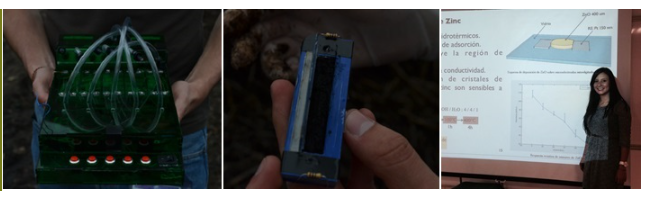

Environmental monitoring is an area that comprises gas detection (e.g. O2, COx, SOx)
and waste monitoring (e.g. biomass, biogas production). Our team developes sensors and biosensors for these
purposes using MOx (Metal-Oxide), IR (Infrared), polymeric nanolayers, surface functionalization and
microsystem fabrication technologies.
In addition, we develop specific electronics to incorporate there sensors into field-equipment.

Gas Sensors
Development of gas microsensor using MOx (Metal-Oxide), surface functionalization and polymeric
nanolayers is one of our main components in these area. However, our technology is not limitated by
those techniques. IR (Infrared) technology is a promising technology in the detection and quantification
of gases. Until now, we have developed several gas sensors using multiple technologies, our brochure
includes oxygen, COx, H2S and SOx gases.
Micro-respirometer
We develope new equipment and technology for in-situ measurements of biomass in waste treatment
plants and farms. Our system is capable of establishing the biomass of a real sample in a matter of 90
minutes without the need of labs or experts. The complete equipment measures the biomass of different
samples and gives the detailes information in electronic format so it can be downloaded using a USB
port. The measuring device is a low cost (<$5 USD) disposable element while the reading equipment is
fully portable.
Bioreactors
Using the microfabrication technology, we can produce different and configurable bioreactors
on glass or transparent polymers to grow bacteria, yeast, fungi or algea. Our technology has
been tested for several strains and can be complemented with passive microelectronics to detect
variations of the cultures.